Page 1: Room of Requirement - Hidden Things
Self-Playing Harp
In his search for the Philosopher's Stone, Professor Quirinus Quirrell enchanted a harp to play on its own to induce Fluffy the Cerberus into sleep. Quirrell was then able to sneak past the sleeping beast.
Return to: Madame Malkin
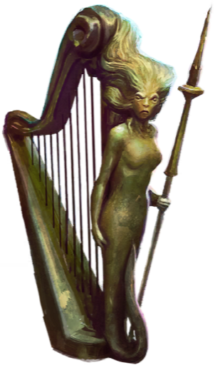
Crystal Ball
Also known by Seers as “The Orb”, crystal balls are used for divination purposes. According to Professor Sybil Trelawney, crystal gazing is a refined art, and not all wizarding students are able to see anything.
Return to: Cassandra Vablatsky
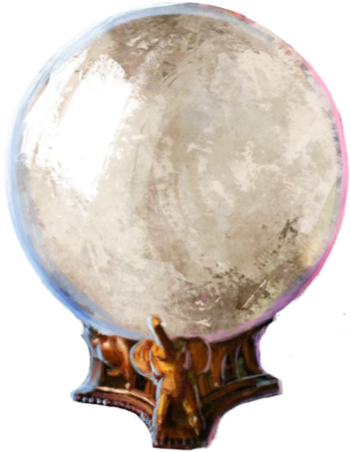
Dirigible Plum
Dirigible Plums are orange fruits that grow upside down on a bush, appearing to float in the air. They are believed to enhance the “ability to accept the extraordinary” within those who consume them.
Return to: Ottery St. Catchpole
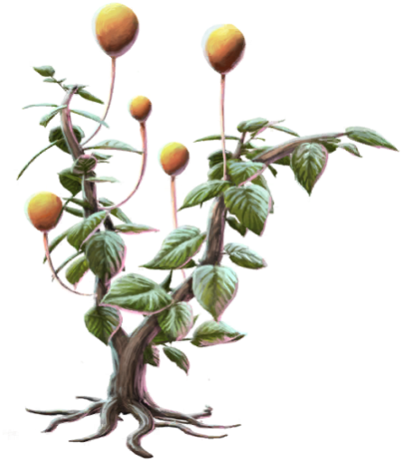
Quibbler
The Quibbler - “The Wizarding World's Alternative Voice” - is a wizarding tabloid, often disregarded for printing conspiracy theories and odd stories.
Return to: Luna Lovegood
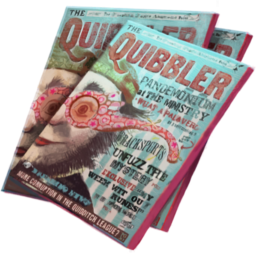
Music Box
A delightful music box, featuring a dancing troll. Some music boxes have been known to be enchanted, causing whoever listens to its sinister, tinkling tune to fall asleep.
Return to: Romilda Vane
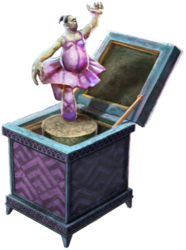
Page 2: Hogwarts Gate
The Knight Bus
The Knight Bus is a magical triple-decker bus that provides emergency transport for stranded members of the wizarding world. Capable of extraordinarily fast travel, the haphazard way the bus maneuvers through traffic gives passengers a truly unique experience.
Return to: Diagon Alley
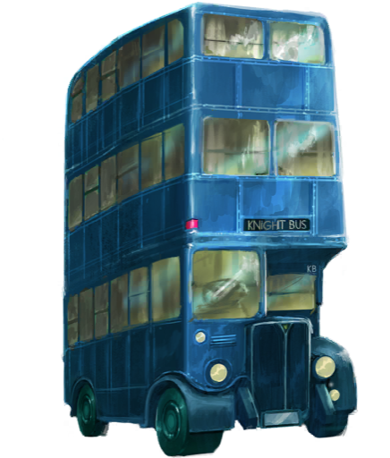
Whomping Willow
The Whomping Willow is a particularly violent tree planted on the grounds of Hogwarts. Its limbs attack anything that crosses its path, and it was planted right over a secret passage to the Shrieking Shack in Hogsmeade.
Return to: Hogwarts Grounds
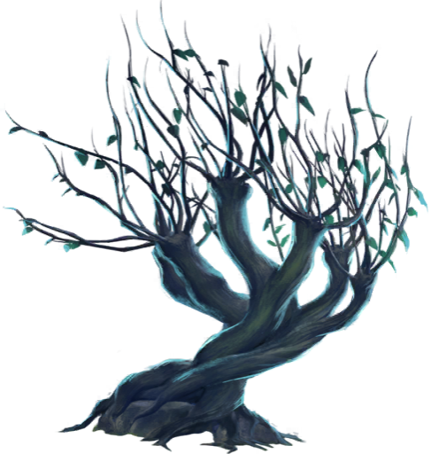
Grawp
The giant Grawp is the half-brother of Rubeus Hagrid. At sixteen feet tall, he was considered too small for a giant, and was abandoned by his mother. Hagrid took care of him instead, and hid him within the Forbidden Forest.
Return to: The Forbidden Forest
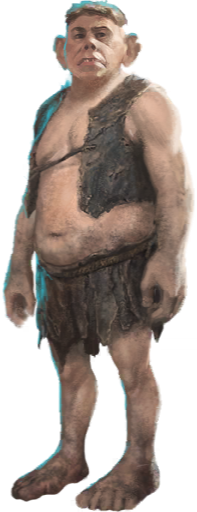
Weasleys' Flying Car
Arthur Weasley enchanted a Muggle car to fly. After they missed the train to Hogwarts, the car was “borrowed” by Harry and Ron so they wouldn't be late. They accidentally flew the car directly into the Whomping Willow upon their arrival.
Return to: Ottery St. Catchpole
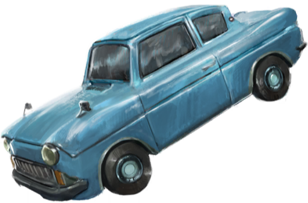
Howler
Howlers are magical letters that, when opened, read aloud the writer's message - usually at a very high volume. They are typically used as a form of punishment and they increase in intensity the longer they remain sealed.
Return to: Molly Weasley, 1992
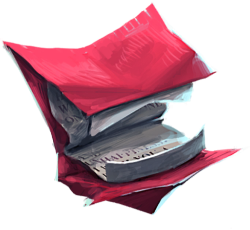
Wanted Poster of Sirius Black
After being held for twelve years under false accusations, Sirius Black was the first wizard to ever escape from Azkaban Prison by squeezing through his cell's bars in his Animagus form.
Return to: Hogmeade Village, 1993
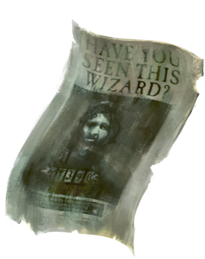
Page 3: King's Cross Station
Baby Mandrake
Mandrakes are magical plants coveted by Potion masters. When pulled from the soil, they cry out. Cries from a mature Mandrake are fatal, and even a seedling's wail can knock a wizard unconscious unless earmuffs are worn during re-potting.
Return to: Hogwarts Greenhouse Three
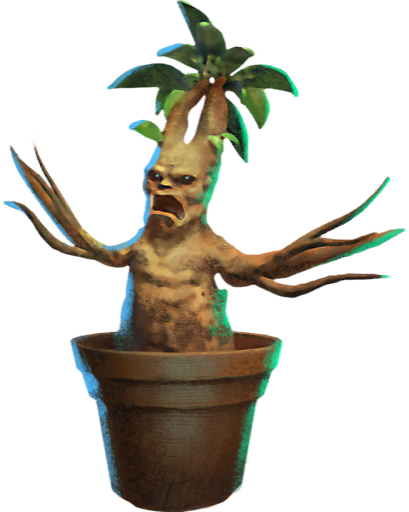
Hogwarts Express Engine
After assembling on Platform 9 3/4 at King's Cross Station in London, Hogwarts students catch the steam-powered Hogwarts Express to Hogsmeade Station at the beginning of the school year. They return back on the same train at the end of term.
Return to: Platform 9 3/4
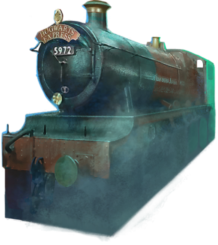
Platform 9 3/4 Sign
Platform 9 3/4 is not visible to Muggles that frequent King's Cross Station in London. Platform 9 3/4 is accessible by running directly into the wall between Platforms 9 and 10.
Return to: King's Cross Station
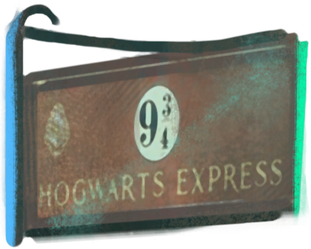
Giant's Helm
An abnormally large combat helmet, fit for a giant. The great Giant Wars took place before the end of the nineteenth century, and the conflict is an O.W.L-Level subject matter in the History of Magic curriculum.
Return to: Unknown Lake, Russia
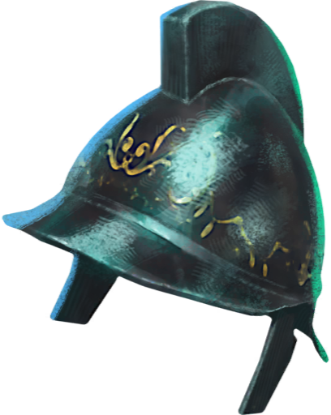
Foe-Glass
Foe-Glass is a type of Dark Detector. Enemies of the owner of the glass appear as shadows, but become clearer as they get closer to the owner's location.
Return to: Ministry of Magic Auror Headquarters
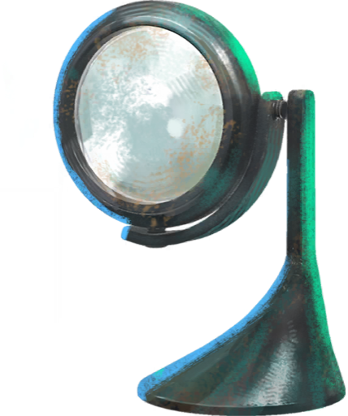